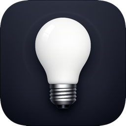

Control your WiFi LED strips from the macOS menu bar. No phone needed, no cloud, no account. Just your Mac and your lights.
Controla tus tiras LED WiFi desde la barra de menú de macOS. Sin móvil, sin nube, sin cuentas. Solo tu Mac y tus luces.
Magic Home, MagicHue and LEDENET WiFi LED controllers only come with mobile apps. If you want to adjust your lights while working on your Mac, you have to reach for your phone every time. Lucis solves this by putting full LED control in the macOS menu bar, one click away at all times.
Lucis is a native macOS application built entirely with Apple frameworks. It communicates directly with your LED controllers over your local WiFi network using TCP commands. No internet, no cloud servers, no accounts. Your data never leaves your Mac.
Toggle your lights from the menu bar or with the global keyboard shortcut Cmd+Opt+L. Instant response, no delays.
Choose from 10 preset colors, pick any hue from the color spectrum, or adjust the warm white channel for RGBWW strips. Fine-tune brightness from 2% to 100%.
Rainbow, gradient, strobe, breathing and color jump effects with adjustable speed. Activate effects directly from the popover.
Create and name your own lighting scenes. Apply them with one click to instantly set the mood for work, movies, gaming or relaxation.
Set timers to turn your lights on or off at specific times. Configure which days of the week each schedule runs. Wake up with light.
Automatically react to macOS events: turn lights off when your Mac sleeps, on when it wakes, dim when the display turns off, or apply a scene when you log in.
Control your lights with your voice. Lucis integrates with Siri and the Shortcuts app so you can say "Turn on Lucis" or build custom automations.
Lucis scans your local network to find LED controllers automatically. It also tracks IP changes when your router assigns a new address via DHCP.
Control several LED strips from one place. Lucis supports multiple devices simultaneously. Switch between them with the picker in the popover, or apply scenes and triggers that target all your lights at once.
Lucis works with any WiFi LED controller that uses the Magic Home / LEDENET protocol (TCP port 5577). This includes controllers sold under these brands:
Lucis contains zero analytics, zero tracking, and zero third-party code. All communication stays on your local WiFi network. Your light settings are stored only on your Mac. Read the full privacy policy.
macOS: 14.0 (Sonoma) or later
Processor: Apple Silicon or Intel
Network: WiFi — Mac and LED controllers on the same local network
Internet: Not required. Lucis works entirely offline.
Los controladores WiFi LED de Magic Home, MagicHue y LEDENET solo traen apps para móvil. Si quieres ajustar tus luces mientras trabajas en el Mac, tienes que coger el móvil cada vez. Lucis resuelve esto poniendo el control total de tus LED en la barra de menú de macOS, siempre a un clic de distancia.
Lucis es una aplicación nativa de macOS construida íntegramente con frameworks de Apple. Se comunica directamente con tus controladores LED a través de tu red WiFi local mediante comandos TCP. Sin internet, sin servidores en la nube, sin cuentas. Tus datos nunca salen de tu Mac.
Enciende o apaga tus luces desde la barra de menú o con el atajo de teclado global Cmd+Opt+L. Respuesta instantánea, sin retrasos.
Elige entre 10 colores predefinidos, selecciona cualquier tono del espectro cromático o ajusta el canal de blanco cálido para tiras RGBWW. Brillo ajustable del 2% al 100%.
Arcoíris, degradado, estrobo, respiración y salto de colores con velocidad ajustable. Activa los efectos directamente desde el popover.
Crea y nombra tus propias escenas de iluminación. Aplícalas con un clic para establecer al instante el ambiente para trabajar, ver películas, jugar o descansar.
Programa horarios para encender o apagar tus luces a horas concretas. Configura qué días de la semana se activa cada horario. Despierta con luz.
Reacciona automáticamente a eventos de macOS: apaga las luces cuando el Mac entra en reposo, enciéndelas al despertar, baja la intensidad al apagar la pantalla o aplica una escena al iniciar sesión.
Controla tus luces con la voz. Lucis se integra con Siri y la app Atajos para que puedas decir «Enciende Lucis» o crear automatizaciones personalizadas.
Lucis escanea tu red local para encontrar controladores LED automáticamente. También detecta cambios de IP cuando el router asigna una nueva dirección por DHCP.
Controla varias tiras LED desde un solo lugar. Lucis soporta múltiples dispositivos simultáneamente. Cambia entre ellos con el selector del popover, o aplica escenas y activadores que actúen sobre todas tus luces a la vez.
Lucis funciona con cualquier controlador WiFi LED que use el protocolo Magic Home / LEDENET (puerto TCP 5577). Esto incluye controladores vendidos bajo estas marcas:
Lucis no contiene analítica, ni rastreo, ni código de terceros. Toda la comunicación permanece en tu red WiFi local. La configuración de tus luces se almacena únicamente en tu Mac. Lee la política de privacidad completa.
macOS: 14.0 (Sonoma) o posterior
Procesador: Apple Silicon o Intel
Red: WiFi — Mac y controladores LED en la misma red local
Internet: No necesario. Lucis funciona completamente sin conexión.